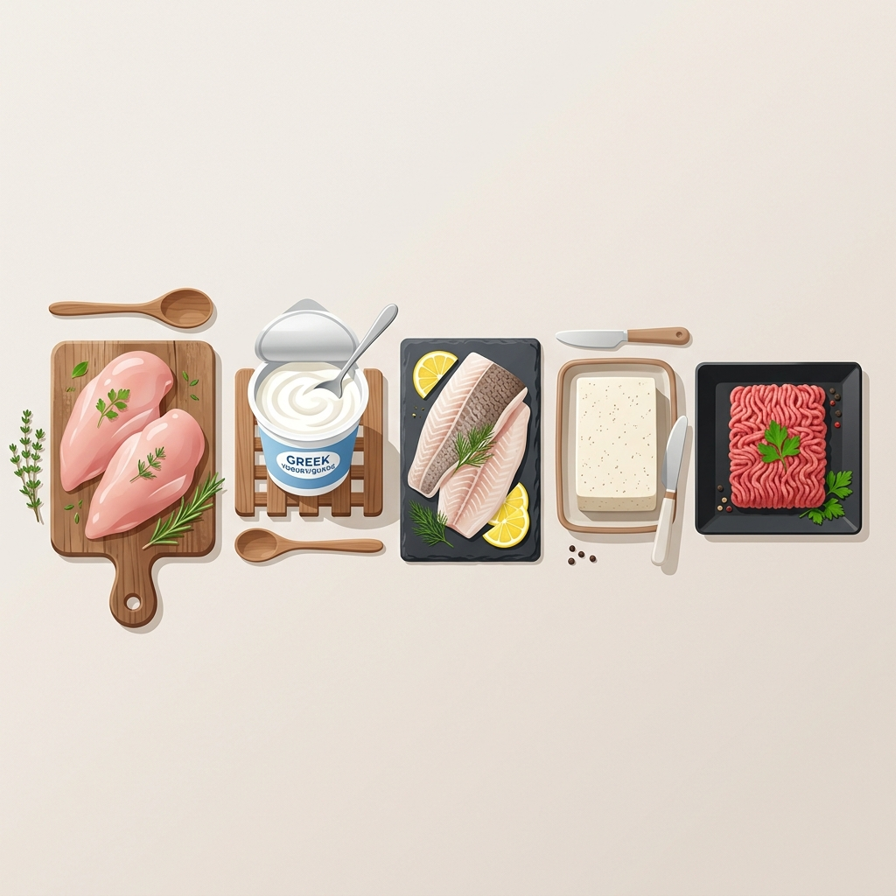

Clean Bulking-paketet: Bygg muskler utan att lägga på dig fett

När det är dags att gå på "bulk" och lägga på sig muskelmassa är det lätt att falla i fällan att äta allt man ser. Men en så kallad "dirty bulk" resulterar oftast i onödigt mycket fettmassa som blir seg att deffa bort senare. Hemligheten bakom en lyckad Clean Bulk är att hålla proteinet skyhögt, kalorierna i ett kontrollerat överskott, och fettet lågt.
De bästa råvarorna för en ren bulk 2026
För en ren bulk vill vi ha livsmedel med extremt hög proteinhalt per 100 gram, men där priset fortfarande är rimligt. Vår algoritm har filtrerat fram följande vinnare:
- Fryst Kycklingfilé: Klassikern som aldrig sviker. Genom att köpa storpack på Willys får du ett väldigt starkt PPK på en ren proteinkälla.
- Naturell Lättkvarg (0.5% fett): Inget tillsatt socker, nästan rent kaseinprotein. Perfekt som kvällsmål för att hålla proteinsyntesen igång under natten.
- Fryst Torsk/Sej: Vit fisk är i princip ren proteindata. Minimalt med kalorier, noll fett, perfekt för dig som vill spara fettmakron till nyttiga oljor eller nötter.
- Nötfärs 5%: Ger dig viktigt järn och kreatin naturligt, men håller nere det mättade fettet till ett minimum jämfört med billigare 15%-ig färs.
Exempel på högkvalitativa proteinkällor
Här är typexempel på livsmedel som ger dig extremt mycket rent protein i förhållande till fett- och kolhydratsmängd:
| Produkt | Butik | Protein per 100g |
|---|---|---|
| Kycklingbröstfilé fryst | Willys | 22.0 g |
| Lättkvarg (Naturell, 500g) | Hemköp | 11.0 g |
Optimera din Clean Bulk med Proteinpriser
Att köpa magra proteinprodukter är i vanliga fall dyrare än att köpa feta charkvaror. Det är därför det blir extra viktigt att jämföra kilopriset mot den faktiska proteinmängden. Använd vårt färdiga Clean Bulking-filter på startsidan för att direkt duka upp veckans billigaste och renaste proteinkällor.
Vill du se vilka av dessa råvaror som är billigast i butikerna just nu? Aktivera Clean Bulking-filtret för att jämföra priser direkt!
Visa Clean Bulking-paketet i kalkylatorn →